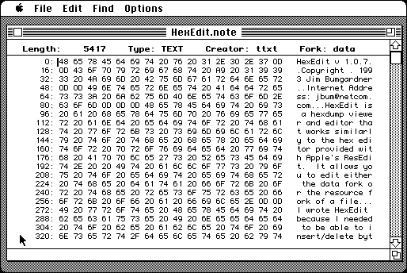

Download
hexedit107.zip (82K) HexEdit 1.0.7 repackaged into a zipped hfs disk image and checksum file. The disk image can be mounted with Mini vMac.
hexedit107.hqx (115K) HexEdit 1.0.7 in the original format.
copyright: Jim Bumgardner
mod date: Sep 25, 1994
license: free for non-commercial use
from url :
Jim's Shareware
A "hexdump viewer and editor". Source code is available.

If you find these downloads useful, please consider helping the Gryphel Project, which hosts them.
Here are the md5 checksums for the downloads, signed with Gryphel Key 5:
--------- GRY SIGNED TEXT --------- d891dfc54e26cd6983d4337f2f56a86d hexedit107.zip 5e3f413e54db0b336d2428fdf8afbec6 hexedit107.hqx ------- BEGIN GRY SIGNATURE ------- Gry/4Xa8CFcUzxdN/N8FXT1LnD4f8k+gAkCbcgKcj/45i28ycO2Wn8pepZuYnzAx fJ+Iv8roLqDsU17Ry/pLM2Pqv9pOFzF4P7JC48PwrNnkVDjLa1jiCIuJjrwo4Eo8 2WD9nfHdanwjBsSUiHpUEUfU7i/PuOrMo5Z63pa2JbHYiUEIHWkokIYGjIaolWhJ -------- END GRY SIGNATURE --------